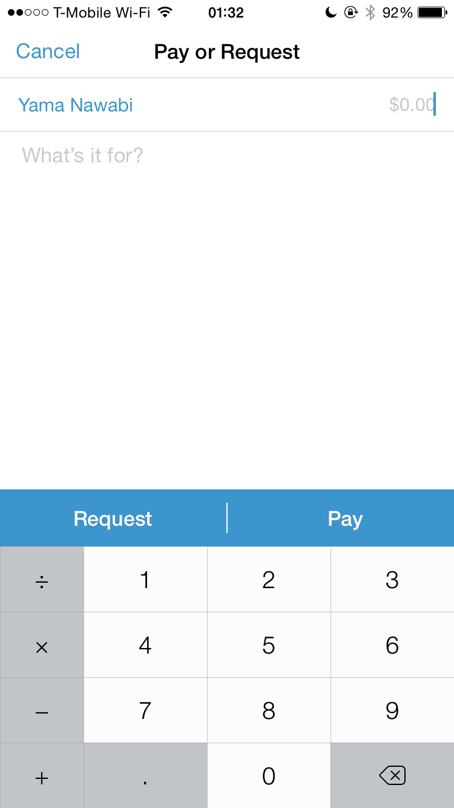

Square Cash - Main Screens
Square Cash is a payment service and mobile application offered by Square, Inc. for both business and personal use. The main mobile screen is extremely clean and simple:
The app launches right to this screen, where a user can just start punching in numbers. The hundredths don't show up until the user taps a decimal points; even then .00 is grayed out. The number text size scales down accordingly with more digits—the original text size started large because a standard quick transaction most likely doesn't exceed 2 figures. If more than 5 digits are input, the number would just shake to visually indicate the error.
This simple screen emphasizes the quick and easy payment experience that Square Cash promotes: "Exchange money quickly, easily, and for free". Both visual and animation designs lend themselves to the user experience.
The same seamless experience continues beyond the mobile app screen. A user can have a vanity web page to receive payment from non-users. This responsive web page works on both desktop and mobile:
What makes Square Cash great is more than these simple screens. For example, users get notified immediately when a transaction occurs, and can even confirm the pending transaction in their own bank accounts. This gives the user a sense of control and security, which is essential to the user experience of a financial service.
A note on Venmo: [ Expand to read more ]
Venmo is a free digital wallet that lets you make and share payments with friends. The service's tag line is "Send money instantly, for free." Here are the screens leading to the payment step:
- 
Venmo has a different approach to mobile payment—it is inherently social, so the main screen displays a social timeline first. This helps with user recruitment, engagement, and retention, but does not necessarily make for a good payment experience (compared to Square Cash).
The action flow is more intuitive than Square Cash as the user selects a recipient's name first, which is more conventional (e.g., email, messaging, etc.). However, this can either put stress on the user's cognitive load by requiring her to memorize the $ amount to input after searching for a recipient, or delay the action by requiring her to confirm the $ amount with the recipient. In contrast, Square Cash takes the $ amount off of the user's working memory from the first screen.
MoodNotes - Mood Input
MoodNotes is a health journal app to capture and track mood patterns for thinking habit improvement via cognitive behavioral therapy (CBT). To add a current mood, the user is presented with this screen:
That's it. There is no repetitive questionnaire to fill out as expected of the therapy process—no "rank your mood in a scale of 1 to 7". The user simply swipes up or down the screen to change the curvature and direction of the "mouth" to indicate a mood. These expressions are universally understood and relatable. The background color changes from the neutral blue to more saturated green or yellow for a positive mood, and dark blue or desaturated gray for a negative mood, reinforcing the selection by the user.
More questions appear later in the process, in a very short and digestible format, one-by-one as to not be overwhelming. Everything is optional and the user can always save and quit the entry at any step.
The overall user experience strives to give the least hindrance to data input. A depressed user might already feel too unmotivated to do anything, let alone going through a complex process of logging their mood. The simplicity of MoodNotes lowers this barrier, encouraging logging and follow-through with CBT.
Would you like to visit my portfolio?